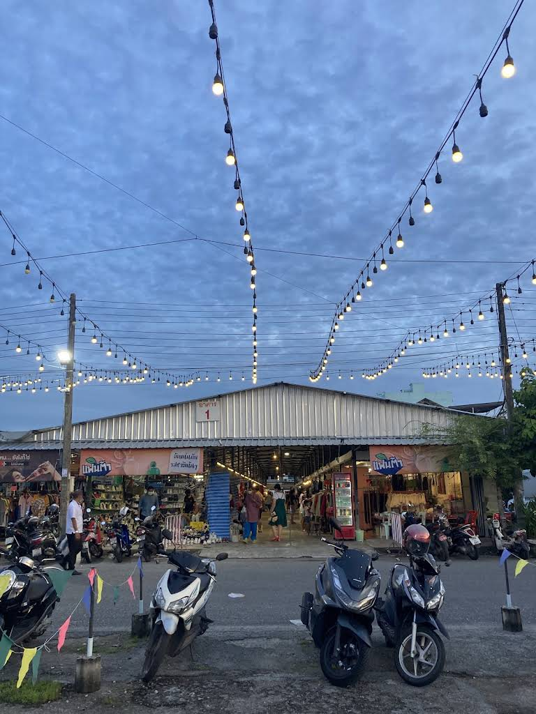

There's a market in Phuket Town that actually carries the Chatuchak name — ตลาดจตุจักรภูเก็ต, JJ Phuket to locals. Not a nickname borrowed from Bangkok's weekend giant, but a real namesake: 25 years old, open six days a week, and the biggest concentration of secondhand goods on the island. This is how it's laid out, what's worth digging through, and how the weekend layer next door has turned it into something even bigger.
Born From a Crisis, Built Into an Institution
JJ Phuket opened on March 9, 1999 — in the aftershock of the 1997 Asian financial crisis, when people across Thailand started clearing out surplus household goods and selling them straight off their car trunks. Back then it was one of the first tailgate markets in Phuket Town: a wide-open lot, weekends only, no roof, no walls, just people and their goods.
It stuck. Over the following two decades the operators built permanent structures over the space — covered buildings so vendors and shoppers alike could get out of the sun and the rain, and so the market could stop being a weekend event and open nearly every day instead. What started as an improvised response to hard times became an institution: Phuket's largest secondhand market, full stop.
The Layout: Five Buildings, One Secondhand Hub
The market covers around 6,000 square meters with parking for over 100 vehicles, organized into five main buildings:
- Commercial Building — larger stores of secondhand clothing and general goods, plus restaurants.
- Buildings 1–2 — the real secondhand core: clothes, shoes, bags, furniture, electrical appliances, and electronics. This is where most of the market's identity lives.
- Buildings 3–4 — food stalls, a pet zone, a car wash service, and even a Flash Express courier counter. The market office sits at the back of Building 3.
It's open every day except Monday — Tuesday to Thursday from 9:00 AM to 5:00 PM, Friday through Sunday from 9:00 AM to 7:00 PM. Hours at markets like this drift a little over the years, so it's always worth a quick check before heading out.

What's Actually For Sale
This isn't a one-category market. Expect:
- Secondhand clothes, shoes, and bags — the bread and butter of the place
- Kids' clothing and shoes
- Perfume and jewelry
- Secondhand electrical appliances
- Used phones, iPads, and laptops
- Electronics and components
- Motorcycle parts
- Furniture and home décor
- Antiques, collectibles, and vintage odds and ends
- Amulets (พระเครื่อง) — a genuinely serious collector category in Thailand
If you're building a thrift habit around durability and buying circular instead of chasing fast fashion, this is the kind of place where that mindset actually pays off — at this volume, patience gets rewarded.
Vintage Market Phuket 77: The Weekend Layer
Right at the same address, the market's weekend character gets a full upgrade under the name Vintage Market Phuket 77 (ตลาดวินเทจภูเก็ต 77) — a rebrand of what used to be known locally as the old Anuphas tailgate market. It had a proper grand opening in May 2026, complete with a classic car show and a "Southwest Cowboy Phuket Night Party," opened by the president of the Phuket Provincial Administrative Organization. That's not a small local event — that's a market being taken seriously as a destination.
The weekend layer stacks outdoor stalls on top of the indoor buildings, adding secondhand goods, vintage pieces, collectibles, fashion, home décor, and food into the mix — with an indoor zone for when the heat gets to be too much. One note before you search it: don't confuse it with the separately branded "Vintage Market Phuket," a themed night market on the Kathu side of the island. Different places, different names, easy to mix up.
Vendors Worth Knowing
- Studio 90's Phuket — a secondhand fashion seller focused on vintage and '90s-style clothing. Like a lot of the smaller operators in this scene, they run primarily through social media (TikTok, Instagram) rather than a fixed storefront — follow for restock drops rather than assuming they'll always be in the exact same spot.
- Vintage Market Phuket 77 runs community events beyond straight shopping too — aerobic dance sessions have shown up on their page alongside the usual secondhand and vintage browsing. It's as much a weekend gathering spot as a market.
Vendors here (as with most Thai markets built around individual sellers) shift and rotate over time, so treat any specific stall as a lead worth checking on social media before you make a special trip for it.
Quick Facts
| Also known as | ตลาดจตุจักรภูเก็ต · JJ Phuket |
|---|---|
| Location | Khanit Hongyok Rd, Talat Yai, Mueang, Phuket |
| Founded | March 9, 1999 |
| Hours | Tue–Thu 9 AM–5 PM · Fri–Sun 9 AM–7 PM |
| Closed | Mondays |
| Size | ~6,000 sqm across 5 buildings · 100+ parking |
| Weekend layer | Vintage Market Phuket 77 |
| Bargaining | Expected on goods |
Want a Stall of Your Own?
Here's the part most tourist guides skip: this market rents. If you've ever thought about testing a pop-up for your own secondhand or vintage pieces, JJ Phuket has two stall types — an open lock with no deposit (500 THB/day, 1,750 THB/week, or 6,500 THB/month) and an enclosed lock with walls, a door, and a ceiling (7,880 THB/month, deposit required for the space and electricity). Standard stall size is 4×4 meters.
Bookings go through the market office at the back of Building 3. That's worth remembering if you're ever weighing a physical pop-up alongside the online side of a secondhand brand.
The Plug's Cheat Sheet
- Go on a weekend if you want both the full indoor market and the Vintage Market Phuket 77 outdoor layer running at once.
- Weekday visits (Tue–Thu) are calmer and better if you actually want to dig through Buildings 1–2 without a crowd.
- Bring small bills — bargaining is expected, but nobody's breaking a large note for cheap secondhand pieces.
- Check the social pages of Vintage Market Phuket 77 and individual vendors before you go — restocks and pop-up events get announced there first.
- Buildings 3–4 cover food, pets, and a courier counter — worth remembering if you need to ship something home.
- If a special event (classic car meet, themed night) is on, expect a bigger crowd — plan your browsing time accordingly.
FAQ
No. This is Phuket's own market that happens to carry the Chatuchak name locally (จตุจักรภูเก็ต / JJ Phuket) — a separate, much smaller market with its own 25+ year history.
Also no. Naka Weekend Market is a different night market elsewhere in Phuket, informally nicknamed "Phuket Chatuchak" by some locals — but this market is the one that actually has Chatuchak in its name.
JJ Phuket is the everyday indoor secondhand market (open Tuesday–Sunday). Vintage Market Phuket 77 is the weekend outdoor layer at the same site, leaning more into vintage, collectibles, and event nights. Two names, one address.
Yes — bargaining is expected on goods here. It's a market built on individual sellers, and the price tags move a little for anyone who asks decently.
Ossuary Atelier is built on finding what's actually good in Phuket's secondhand scene — no QR codes, no gimmicks, just the spots worth your time.
Been here? Found something? Leave a note below — we read everything.